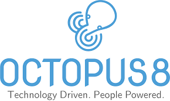

Amberylin Tan
Digital Creator & Developer
Home
About
Projects
My Projects
Wearify
Mobile app for Chinese culture fashion and studio booking.
Technologies:
Adobe XD
UI/UX
Mobile
AMS
Web app with database integration for permanent data storage.
Technologies:
React.js, Node.js, MySQL
Full-stack
Database

Octopus8 - UAT Lead Internship
Conducted User Acceptance Testing for company projects, guided clients through testing processes, and generated test outcome reports.
Duration:
April 2023 - October 2023
UAT Testing
Client Management
Quality Assurance